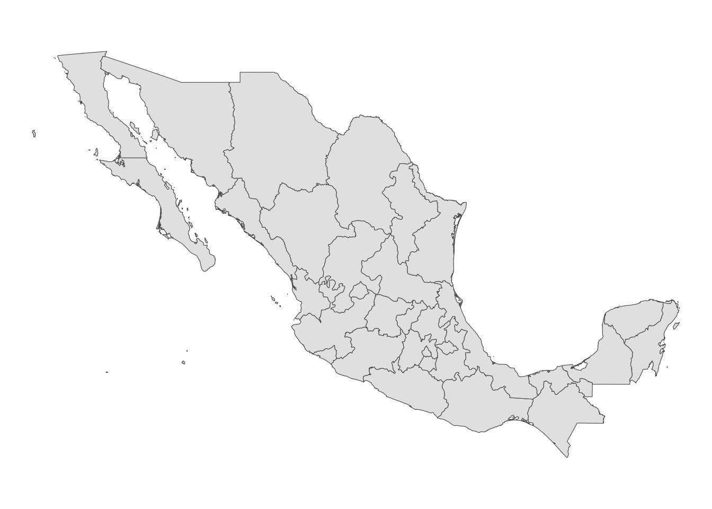
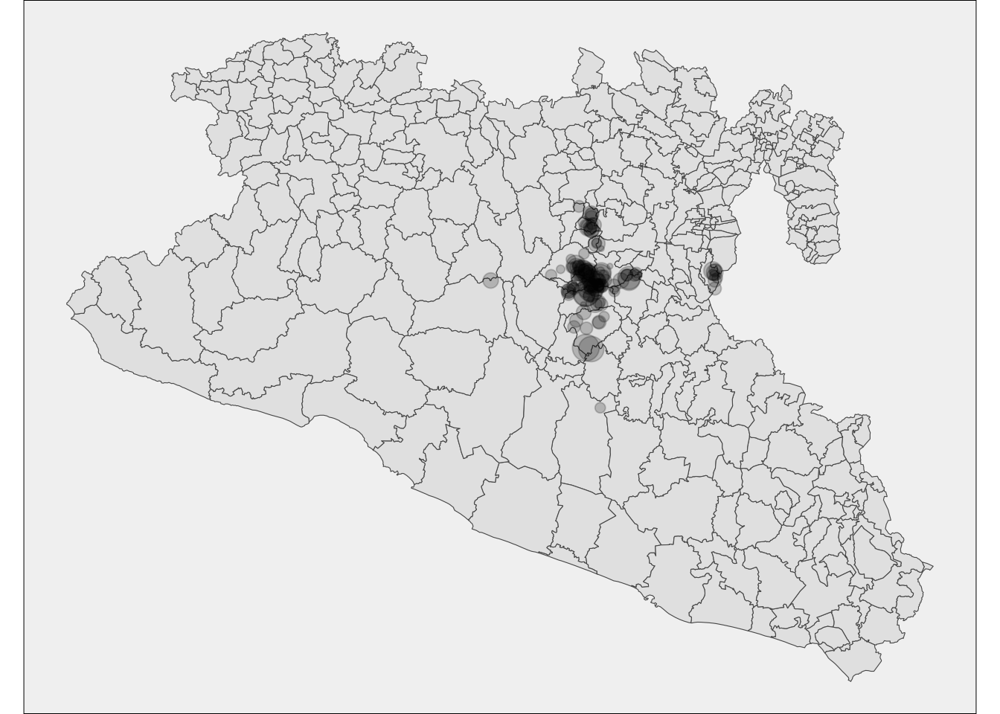

Vectors and Rasters
1 Introduction.
Spatial data is usually represented in two different ways:
- Vectors: Represent objects in different dimensions.
- Raster: Represent continuous values in a grid.
1.1 Spatial objects in R.
In this tutorial we will introduce to spatial data manipulation in
R.
There are two main formats to manipulate spatial data in R:
SpatialDataFrame from the
sppackage: This is was the first format introduced in R for spatial data manipulation, therefore, this package has a lot of dependencies (packages that uses this format to do other functions) i.eraster,spdep,spstat.Simple features from the package
sf: This is a more recently developed package, this package was developed to be more intuitive and friendly with other packages such asdplyr. The problem with this package is that since its more recent, some packages doesn’t support this format.
Working with both formats has its advantages, for spatial data
manipulation sf is more intuitive and powerful, but for
spatial analysis sp is more robust.
Here we will use mostly the sf package, but there will
be times that we will need to switch between formats.
We will continue using the library STNet to get the data
we will be using in this exercise. Just in case you have not installed
it yet, the installation of this package is done from github, so we will
need to install the packagedevtools to access the
STNet package.
# If devtools is not installed we need to install it
install.packages("devtools")
# once installed we can use the following function to install STNet
devtools::install_github("jpablo91/STNet")2 Vector data
Spatial objects can be represented in multiple dimesions:
- Point, is the most basic form of representing spatial data.
It contains only the spatial coordinates of an even or object. For
example, we use this to represent the spatial location of a farm, a
capture of an animal or a case report.
- Line, Includes the spatial location of an object and the
direction. we can use lines to represent a road, a river or a
route.
- Polygon, Includes the spatial location and geometry of an object. We use polygon data to represent the shape of a building, lake or a administrative area.
Besides having the location of an object, we can include other characteristics such as the name, id, temperature recorded, number of animals in the farm, etc…
2.1 Components of spatial datasets
There are multiple ways to loading spatial data into R, we will use
the function st_read() to load the data contained in the
STNet library. lets get started:
# Loading the libraries
library(STNet)
library(sf)
library(dplyr)
# Loading the spatial data from the package
MxSp <- st_read(system.file("data/MxShp.shp", package = "STNet")) ## Reading layer `MxShp' from data source
## `/Library/Frameworks/R.framework/Versions/4.2-arm64/Resources/library/STNet/data/MxShp.shp'
## using driver `ESRI Shapefile'
## Simple feature collection with 2471 features and 6 fields
## Geometry type: MULTIPOLYGON
## Dimension: XY
## Bounding box: xmin: 1058748 ymin: 319149.1 xmax: 4082958 ymax: 2349605
## Projected CRS: MEXICO_ITRF_2008_LCCThe whole data set is a shapefile of Mexico aggregated at the
administration level 3 (Municipality). Since we will not be using the
whole country for our analysis, we will filter the data only for the
study region. Luckly for us, we can use the same function
filter() we are already familiarized with:
# Filter to study area
Area <- MxSp %>% # This is the data we will filter
filter(CVE_ENT %in% c('15', '12', '16')) %>% # Filter the data to use the states with codes: 15, 12 y 16
st_transform(crs = st_crs(4326)) # transform to lat/longNotice that the last line transformed the data to a different coordinate reference system, we will talk more about this later. Lets examine the data for now:
head(Area)## Simple feature collection with 6 features and 6 fields
## Geometry type: MULTIPOLYGON
## Dimension: XY
## Bounding box: xmin: -100.5848 ymin: 16.88094 xmax: -98.218 ymax: 18.35471
## Geodetic CRS: WGS 84
## CVEGEO CVE_ENT CVE_MUN NOMGEO AREA_LCC ID
## 1 12067 12 067 Tlapehuala 284.696 12067
## 2 12043 12 043 Metlatónoc 584.023 12043
## 3 12081 12 081 Iliatenco 235.682 12081
## 4 12066 12 066 Tlapa de Comonfort 609.030 12066
## 5 12078 12 078 Cochoapa el Grande 638.160 12078
## 6 12079 12 079 José Joaquín de Herrera 131.977 12079
## geometry
## 1 MULTIPOLYGON (((-100.3237 1...
## 2 MULTIPOLYGON (((-98.26956 1...
## 3 MULTIPOLYGON (((-98.57511 1...
## 4 MULTIPOLYGON (((-98.5618 17...
## 5 MULTIPOLYGON (((-98.28944 1...
## 6 MULTIPOLYGON (((-98.95271 1...2.2 Projecting the data.
Our spatial data is in the WGS84 CRS, which is a non-projected
format. Good for locations, bad for measuring distances. The impact of
the projection in our data will be associated with the size of our study
area. In smaller areas the projection wont have a big impact, but as our
study are increases the projection will have a bigger impact when
calculating distances.
We can use the function st_transform() to set a projection
to our data.
How do I know which projection to use? We can use tools such as epsg.io to look for the area we will be working and identify the most proper projection. In this exercise we will use the WGS84 CRS.
The output shows:
- geometry type: The type of shapefile (either point data,
lines or polygons). - dimension Dimensions used in the
data.
- Bounding bix: The extent of our data.
- CRS: The coordinate reference system.
- And the first 10 features.
The sf objects are basically a data.frame with extra
information about geometry, projection and CRS. We can ask for the
geometry only using the $ operator or the function
st_geometry()and then show it in a plot.
plot(Area$geometry)We can also extract only the data frame without geometry using the
function data.frame():
data.frame(Area) %>%
head() # We use this function to see the first 6 only## CVEGEO CVE_ENT CVE_MUN NOMGEO AREA_LCC ID
## 1 12067 12 067 Tlapehuala 284.696 12067
## 2 12043 12 043 Metlatónoc 584.023 12043
## 3 12081 12 081 Iliatenco 235.682 12081
## 4 12066 12 066 Tlapa de Comonfort 609.030 12066
## 5 12078 12 078 Cochoapa el Grande 638.160 12078
## 6 12079 12 079 José Joaquín de Herrera 131.977 12079
## geometry
## 1 MULTIPOLYGON (((-100.3237 1...
## 2 MULTIPOLYGON (((-98.26956 1...
## 3 MULTIPOLYGON (((-98.57511 1...
## 4 MULTIPOLYGON (((-98.5618 17...
## 5 MULTIPOLYGON (((-98.28944 1...
## 6 MULTIPOLYGON (((-98.95271 1...2.2.1 What is the coordinate reference system?
The coordinate reference system (CRS) is a format to specify the scale for the coordinates being used to describe the location of our data. The most commonly used CRS is WGS84, which provides the latitude and longitude values in a scale of -90 to 90 for latitude and -180 to 180 for longitude. THis CRS is ideal to report locations in a map but it is important to consider that does not takes into account the curvature of the earth, which is an important factor when we are measuring distances.
To see the full description of the CRS from a spatial object we can
use the function st_crs():
st_crs(Area)## Coordinate Reference System:
## User input: EPSG:4326
## wkt:
## GEOGCRS["WGS 84",
## ENSEMBLE["World Geodetic System 1984 ensemble",
## MEMBER["World Geodetic System 1984 (Transit)"],
## MEMBER["World Geodetic System 1984 (G730)"],
## MEMBER["World Geodetic System 1984 (G873)"],
## MEMBER["World Geodetic System 1984 (G1150)"],
## MEMBER["World Geodetic System 1984 (G1674)"],
## MEMBER["World Geodetic System 1984 (G1762)"],
## MEMBER["World Geodetic System 1984 (G2139)"],
## ELLIPSOID["WGS 84",6378137,298.257223563,
## LENGTHUNIT["metre",1]],
## ENSEMBLEACCURACY[2.0]],
## PRIMEM["Greenwich",0,
## ANGLEUNIT["degree",0.0174532925199433]],
## CS[ellipsoidal,2],
## AXIS["geodetic latitude (Lat)",north,
## ORDER[1],
## ANGLEUNIT["degree",0.0174532925199433]],
## AXIS["geodetic longitude (Lon)",east,
## ORDER[2],
## ANGLEUNIT["degree",0.0174532925199433]],
## USAGE[
## SCOPE["Horizontal component of 3D system."],
## AREA["World."],
## BBOX[-90,-180,90,180]],
## ID["EPSG",4326]]2.3 Point data (converting from a data frame)
We can convert a data.frame to a spatial points if we have the coordinates information, lets try with one of the data sets from the STNet library:
data('captures') # we load the data
# Lets look at the variables
head(captures)## municipality location Loc date year captures
## 1 Temascaltepec San Pedro Tenayac Cueva el Uno 11/06/14 2014 6
## 2 Tlatlaya Nuevo Copaltepec La alcantarilla 12/05/05 2005 3
## 3 Tlatlaya Nuevo Copaltepec La alcantarilla 12/05/07 2007 30
## 4 Tlatlaya Nuevo Copaltepec La alcantarilla 12/03/09 2009 0
## 5 Tlatlaya Nuevo Copaltepec La alcantarilla 10/08/10 2010 4
## 6 Tlatlaya Nuevo Copaltepec La alcantarilla 16/05/11 2011 4
## treated lat lon trap_type
## 1 6 18.03546 -100.2095 1
## 2 2 18.40417 -100.2688 1
## 3 29 18.40417 -100.2688 4
## 4 0 18.40417 -100.2688 3
## 5 3 18.40417 -100.2688 1
## 6 3 18.40417 -100.2688 2This data has the column LATITUD and LONG, which
correspond with x and y for a spatial coordinate. We can use the
function st_as_sf() to do this:
capturesSp <- captures %>%
st_as_sf(
coords = c('lon', 'lat'), # the names of the variables with the x and y information
crs = st_crs(4326) # the CRS for those coordinates
)
# Lets have a look at our points
plot(capturesSp$geometry)You will notice that the points by itself does not provides a lot of useful information. Lets try to put the points and the polygons in the same map:
plot(Area$geometry)
plot(capturesSp$geometry, add = T)Still not pretty enough, we will work more on this later…
2.4 Joining spatial objects
So far we have two kind of spatial objects, we can extract the
information for the points to the polygons by joining based on where
they intersect, for this we can sue the st_join() function.
It is important that the two spatial objects are in the same CRS.
spJoin <- Area %>%
st_join(capturesSp)
# Lets examine our object
head(spJoin)## Simple feature collection with 6 features and 14 fields
## Geometry type: MULTIPOLYGON
## Dimension: XY
## Bounding box: xmin: -100.5848 ymin: 16.88094 xmax: -98.218 ymax: 18.35471
## Geodetic CRS: WGS 84
## CVEGEO CVE_ENT CVE_MUN NOMGEO AREA_LCC ID municipality
## 1 12067 12 067 Tlapehuala 284.696 12067 <NA>
## 2 12043 12 043 Metlatónoc 584.023 12043 <NA>
## 3 12081 12 081 Iliatenco 235.682 12081 <NA>
## 4 12066 12 066 Tlapa de Comonfort 609.030 12066 <NA>
## 5 12078 12 078 Cochoapa el Grande 638.160 12078 <NA>
## 6 12079 12 079 José Joaquín de Herrera 131.977 12079 <NA>
## location Loc date year captures treated trap_type
## 1 <NA> <NA> <NA> <NA> NA NA NA
## 2 <NA> <NA> <NA> <NA> NA NA NA
## 3 <NA> <NA> <NA> <NA> NA NA NA
## 4 <NA> <NA> <NA> <NA> NA NA NA
## 5 <NA> <NA> <NA> <NA> NA NA NA
## 6 <NA> <NA> <NA> <NA> NA NA NA
## geometry
## 1 MULTIPOLYGON (((-100.3237 1...
## 2 MULTIPOLYGON (((-98.26956 1...
## 3 MULTIPOLYGON (((-98.57511 1...
## 4 MULTIPOLYGON (((-98.5618 17...
## 5 MULTIPOLYGON (((-98.28944 1...
## 6 MULTIPOLYGON (((-98.95271 1...If we look at our object, we will notice that it is a Multipolygon with 606 observations now, instead of the original 319 observations from the Area file. This is beacause there were more than one point joined to each polygon, so there are some repeated polygons. We can use the tools we have used before to summarise the total number of captures by municipality.
spJoin <- spJoin %>%
data.frame() %>% # first we will transfor to a data.frame (this makes easier for the aggregation)
group_by(CVEGEO) %>%
summarise(captures = sum(captures, na.rm = T), treated = sum(treated, na.rm = T))
# Lets look at the result
head(spJoin)## # A tibble: 6 × 3
## CVEGEO captures treated
## <chr> <int> <int>
## 1 12001 0 0
## 2 12002 0 0
## 3 12003 0 0
## 4 12004 0 0
## 5 12005 0 0
## 6 12006 0 0Now we have a data.frame with the Municipality ID and the number of
captures and treated. But the problem is that we have lost all the other
spatial information when we did this. We can just join this new
data.frame with the one with the spatial information, for this we can
use the function left_join():
Area <- Area %>%
left_join(spJoin, by = 'CVEGEO')
# Now that we have all the information in a single file we can see the captures by municipality:
plot(Area['captures'])2.5 Raster data:
We use raster data to represent continuous values in a field. Raster are just a grid where each cell has a value and in a grid. The resolution of a raster just represent the size of the cells from the grid. We use raster data to represent values such as altitude, temperature, among other continuous values.
There are multiple ways to get raster data, one example is getting
the data directly from R. We can use the function getData()
from the raster() package to get altitude data:
library(raster)
MxAlt <- getData('alt', country='MEX') # get the data for the whole country
plot(MxAlt) # see the dataRasters are basically grids with a specific resolution and a value associated to each pixel. You can see the information it includes by printing the object:
MxAlt## class : RasterLayer
## dimensions : 2208, 3696, 8160768 (nrow, ncol, ncell)
## resolution : 0.008333333, 0.008333333 (x, y)
## extent : -117.4, -86.6, 14.4, 32.8 (xmin, xmax, ymin, ymax)
## crs : +proj=longlat +datum=WGS84 +no_defs
## source : MEX_msk_alt.grd
## names : MEX_msk_alt
## values : -174, 5389 (min, max)Now let’s map our raster using the ggplot library. For
this, we will need to convert the format of our raster to another that
integrates better with the ggplot library. We will use the
library stars for this. SO if you have not installed it
yet, make sure to install it.
library(stars) # load the stars library
# Convert the format
Mxst <- stars::st_as_stars(MxAlt) %>% # first we convert to the stars format
st_crop(., Area) # we will crop the raster to get only our study area## trying to read file: /Users/josepablogomez/Library/CloudStorage/Box-Box/Methods/Workshops/CADMS/Trainings/PROCINORTE_TT/MEX_msk_alt.grd# Create the figure
ggplot() + # set the empty canvas
geom_stars(data = Mxst) + # We use the function geom_stars to add the raster layer
theme_void() # set the theme to void
3 Putting everything together wit ggplot
Now that we know a bit more about spatial data, lets put everything
together using the ggplot library. So far we have been
using only a few layers for making our figures, but in the next example
we will add one by one the layers to put all the data in the same
figure:
# first we crete an empty container to save out maps
Maps <- list()
# Now we will integrate the concepts we have been talking about to create a map:
Maps$map01 <- ggplot() + # create the empty canvas
geom_stars(data = Mxst) + # add raster layer
geom_sf(data = Area, fill = NA, col = 'grey60') + # add polygon layer
geom_sf(data = capturesSp, cex = 0.3, col = 'skyblue') + # add point layer
theme_void() + # theme for the figure
scale_fill_gradient(low = 'black', high = 'red', na.value = NA) + # color for the gradient
labs(title = 'Map of the study area', fill = 'Altitude') # labels for the figure
Maps$map014 Getting data for other countries/regions
One of the easiest ways to get data from other countries or regions
is downloading directly from R using the raster library
with the getData() function. This function downloads data
from the GADM database using the ISO codes for each country.
For example, we will get a shapefile for Mexico, The data will be
downloaded in your computer and store in your project directory. Once
downloaded you can just load it directly from your computer without
internet connection with the function read_sf.
Sp <- raster::getData(name = 'GADM', # this is the data source
level = 1, # Level of administration
country = 'Mx') %>% # country code
st_as_sf() # Now transform the data to sf
# the dataset can be quite detailed, so we can simplify it to make it easier to plot
Sp <- rmapshaper::ms_simplify(Sp)
# Plot the map
Maps$mx <- ggplot() + # set our empty canvas
geom_sf(data = Sp) + # add the polygons layer
theme_void() # set the theme to void
Maps$mx
Exercise - Making your own map: Get a map from the
region you were born (or if you prefer where you currently live). For
this, use the getData() function with the ISO code for your
country. Use the level of resolution 2, then filter your map to show
only the administration level 1 from the location selected.
5 Cartography
Now that we are familiarized with spatial data and visualization, we can go more detailed into making a pretty map.
First lets aggregate all the capture regarding the year, so we can create a map with the points corresponding to the number of captures:
cap <- capturesSp %>% # Captures data
count(Loc, wt = captures) %>% # count the number of captures by location
rename(captures = n) # rename the variable
# Lets see how it looks like
Maps$area <- ggplot(data = cap) + # Create the empty canvas
geom_sf(data = Area) + # add the layer for polygons
theme_void() + # set the theme to void
theme(legend.position = 'none', panel.background = element_rect(fill = 'gray95')) # Remove the legend
# We can add extra layers to our base map
Maps$area +
geom_sf(aes(size = captures), alpha = 0.2) # add the layer for points
5.1 Change the map extent
Most of the data is concentrated in a specific region and its hard to
see it clear, for this we will zoom in into the region with our points.
We can use the function lims() to specify the x and y
limits of our map. We will define the limits based on the bounding box
of the captures data and save this to an object so we can use it
later
bbox <- st_bbox(capturesSp) # Get the bounding box
mapLims <- lims(x = bbox[c(1, 3)], y = bbox[c(2, 4)]) # specify the limits and save to an object
# Visualize the map
Maps$areaZoom <- ggplot() + # we set the canvas
geom_sf(data = Area,col = 'grey60') +
geom_sf(data = cap, aes(size = captures), alpha = 0.5) +
theme_void() +
scale_fill_gradient(low = 'black', high = 'red') +
scale_size(range = c(0.1, 3)) +
mapLims
Maps$areaZoom5.2 Facets
ggplot(data = capturesSp) +
geom_sf(data = Area,col = 'grey60') +
geom_sf(size = 0.5, alpha = 0.5) +
theme_void() +
mapLims +
facet_wrap(~year) +
theme_dark() +
theme(
axis.text = element_blank(),
axis.ticks = element_blank()
)
5.3 Additional legends
Often we want to show additional legends in our maps to provide more
context of the study area. Two common legends used are a scale bar and a
arrow that points where is the north. The library ggspatial
has some functions to annotate our map and provide these legends.
First we will add a scale bar using the function
annotation_scale(). Notice that since we already have a map
saved in the container Maps, we can just use the same object and add the
additional line of code for our scale bar, connecting with the
+ operator:
library(ggspatial)
Maps$areaZoom <- Maps$areaZoom + # this is the map we previously created
annotation_scale( # add the scale bar
location = 'br', # Location of the scale bar
width_hint = 0.25, # how wide the scale bar will be
line_width = 0.2, # width of the outline
height = unit(.03, "in") # how tall the scale bar will be
)
Maps$areaZoom
We can also add other additional legends like a north arrow, we will
add one with the function annotation_north_arrow() from the
ggspatial library:
Maps$areaZoom <- Maps$areaZoom + # use the previously created map
annotation_north_arrow(location = "tl", which_north = "true", style = north_arrow_fancy_orienteering(text_size = 5),
height = unit(.6, "in"),
width = unit(.6, "in"),
pad_x = unit(0.05, "in"), pad_y = unit(0.05, "in"))
Maps$areaZoom6 Inset maps
Maps$areaZoom +
annotation_custom(
ggplotGrob(
Maps$area +
geom_rect(xmin = bbox[1], ymin = bbox[2], xmax = bbox[3], ymax = bbox[4], fill = NA, col = 'red')
),
xmin = bbox[1], xmax = bbox[1] + 0.5, ymin = bbox[2], ymax = bbox[2] + 0.5
)7 Scatter pie
https://rdrr.io/cran/scatterpie/man/geom_scatterpie.html
# Example ----------
library(ggplot2)
library(scatterpie)
d <- data.frame(x=rnorm(5), y=rnorm(5))
d$A <- abs(rnorm(5, sd=1))
d$B <- abs(rnorm(5, sd=2))
d$C <- abs(rnorm(5, sd=3))
ggplot() +
geom_scatterpie(aes(x=x, y=y), data=d, cols=c("A", "B", "C")) +
coord_fixed()# my data ---------
d <- captures %>%
mutate(noTreat = captures - treated) %>%
group_by(lon, lat) %>%
summarise(treated = sum(treated), noTreat = sum(noTreat), captures = sum(captures))
ggplot() +
geom_sf(data = Area) +
geom_scatterpie(aes(x=lon, y=lat, r = scales::rescale(captures, to = c(0.02, 0.05))), data=d, cols=c('treated', 'noTreat'), color = NA, alpha = 0.5) +
theme_void() +
mapLims